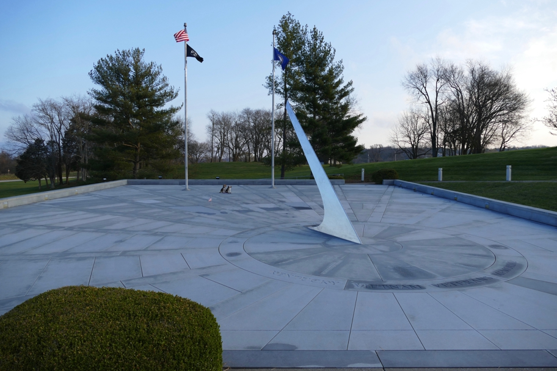

<--Previous Up Next-->

This memorial is a remarkable sundial on which hours are mapped to years during the U.S. war in Vietnam. The gnomon points to each fallen soldier's name on the date of their death.
Frankfort Halley Beagle Kentucky Wallace Beagle